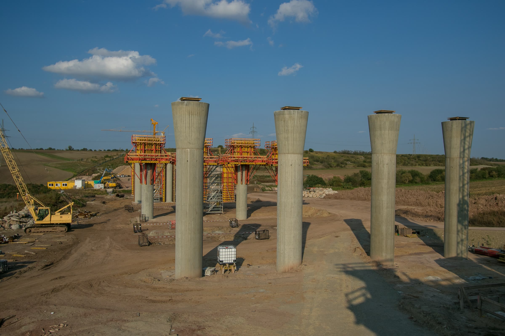

Projekte, die wir begleitet haben
Eine Auswahl aus Ingenieurbau, Bahn, Tiefbau und Hochbau.
Beispielfoto · © Frank Eritt, CC BY-SA 4.0, via Wikimedia Commons
Solmserstraße – Natursteinstützmauer
Im Zuge der grundhaften Erneuerung der Solmserstraße wird die schadhafte Natursteinstützmauer zwischen zwei Verkehrsflächen untersucht.
- Auftraggeber: Stadt Wetzlar, Tiefbauamt
- Unsere Leistungen: Objekt- und Tragwerksplanung (LPH 1–6) unter Berücksichtigung des Denkmalschutzes. Schadenskartierung und fachtechnische Abnahmen.
St 061 Mainberg und Seilerbahn
Erhebliche Schäden und Verformungen an zwei Natursteinstützmauern erfordern die Planung von Sicherungs-, Instandsetzungs- oder Erneuerungsmaßnahmen.
- Auftraggeber: Stadt Frankfurt am Main, Amt für Straßenbau und Erschließung (ASE)
- Unsere Leistungen: Objektplanung Ingenieurbauwerke und Verkehrsanlagen sowie Tragwerksplanung (LPH 1–4), Optional: LPH 5–7
Neue Schlossstraße – Ebene 1
Bei der grundhaften Erneuerung der Neuen Schlossstraße wurde die Böschung mit Bohrpfahl- und Nagelwänden sowie einem rückverankerten Kopfbalken gesichert.
- Auftraggeber: Stadt Heidelberg, Tiefbauamt
- Unsere Leistungen: Fachtechnische Bauüberwachung von Bewehrung und Abdichtung sowie technische und wirtschaftliche Nachtragsprüfung.
Albert-Überle-Straße – Natursteinstützmauer
Schäden und Verformungen gefährden die bestehende Natursteinstützmauer und erfordern eine abschnittsweise Sicherung und Instandsetzung.
- Auftraggeber: Stadt Heidelberg, Tiefbauamt
- Unsere Leistungen: Bestands- und Schadensbewertung; Instandsetzungskonzept mit Mauerwerksinstandsetzung und teilweisem Ersatzneubau als Nagelwand.
Stützmauern am Heiligenberghang – Philosophenweg
Anhaltende Hangbewegungen verursachen Schäden an Wegen und Natursteinstützmauern am Philosophenweg, Philosophengärtchen und Gartenpfad.
- Auftraggeber: Stadt Heidelberg, Landschafts- und Forstamt
- Unsere Leistungen: Machbarkeitsstudie mit Sicherungsvarianten, Kostenschätzung und Bauablaufbetrachtung.
Stützmauer Kita Kanzleigasse 1 – Teilbereich 8
Eine durch Wurzeleinwirkung geschädigte Natursteinstützmauer sichert den höher gelegenen Kita-Garten zum Nachbargrundstück ab.
- Auftraggeber: Stadt Heidelberg, Hochbauamt
- Unsere Leistungen: Bestandsbewertung und Instandsetzungskonzept mit Mauerwerksinstandsetzung und Teilersatzneubau als Nagelwand.
Hamburg – Zweigleisiger Ausbau Zulaufstrecke 6100
Der zweigleisige Ausbau eines Zulaufabschnitts der Strecke 6100 soll die Kapazität des Eisenbahnknotens Hamburg erhöhen.
- Auftraggeber: DB InfraGO AG
- Unsere Leistungen: Fachtechnische Qualitätsprüfung von BIM-Planungsunterlagen des konstruktiven Ingenieurbaus (Eisenbahnüberführungen, Stützwände und Lärmschutzwände).
Hamburg Hbf – Neubau Bahnsteig Gleis 9
Am Hamburger Hauptbahnhof ist ein zusätzlicher Bahnsteig an Gleis 9 zur Kapazitätserweiterung vorgesehen.
- Auftraggeber: DB InfraGO AG
- Unsere Leistungen: Fachtechnische Qualitätsprüfung von BIM-Planungsunterlagen des konstruktiven Ingenieurbaus (Kabeltunnel, Bahnsteig, Bahnsteigdach, Treppenanlagen, Bestandsbauwerke).
VST Marbach West – Bahnsteigmodernisierung
Geschädigte Fertigteilbahnsteige werden instandgesetzt; Bahnsteigausstattung und Leitsystem werden modernisiert.
- Auftraggeber: DB InfraGO AG
- Unsere Leistungen: Planung der Bahnsteig- und Betoninstandsetzung sowie der Modernisierung. Objekt- und Tragwerksplanung (LPH 1–7)
Bf. Rimbach – Belagserneuerung und Neubau WSH
Am Bahnhof Rimbach werden Bahnsteigbeläge und Zugänge erneuert sowie ein neues Wetterschutzhaus vorgesehen.
- Auftraggeber: DB Bahnbau Gruppe GmbH
- Unsere Leistungen: Objekt- und Tragwerksplanung der Bahnsteigmaßnahmen und Neubau Wetterschutzhaus (LPH 2–5)
[Projektname ergänzen]
Schäden an fünf Autobahnbrücken im Raum Trier–Schweich erfordern Maßnahmen zur Erhaltung von Tragwerk und Ausstattung.
- Auftraggeber: Die Autobahn GmbH des Bundes
- Unsere Leistungen: Entwurfsplanung mit bauwerksspezifischen Instandsetzungskonzepten für fünf Brücken (sechs Teilbauwerke).
Geh- und Radwegbrücke Cloerbruchallee – Übergangskonstruktion
Im Zuge der Instandsetzung der Geh- und Radwegbrücke Cloerbruchallee sollen die Übergangskonstruktionen erneuert werden.
- Auftraggeber: Die Autobahn GmbH des Bundes
- Unsere Leistungen: Dehnwegberechnung zur Dimensionierung der Übergangskonstruktionen.
SÜ Dorotheenstraße – Schutzeinrichtungen
Die Straßenüberführung Dorotheenstraße über die A 40 soll mit zusätzlichen Fahrzeugrückhaltesystemen ausgestattet werden.
- Auftraggeber: Die Autobahn GmbH des Bundes
- Unsere Leistungen: Statische Nachweise zur Verankerung der Schutzeinrichtungen sowie für Bestandskappen und Kragarme.
SÜ AS Nettetal
An der Straßenüberführung Nettetal werden der Zugang zum Brückenhohlraum und eine Übergangskonstruktion erneuert.
- Auftraggeber: Die Autobahn GmbH des Bundes
- Unsere Leistungen: Statische Nachweise für Stahlpodest, Verankerung und Einstiegsverschluss sowie Dehnwegberechnung.
Ehemalige Zechenbahn – Überführung A 2 (BW 4407 500)
Korrosionsschäden an Bestands-Spundwänden der Brückenwiderlager und Flügel erfordern eine rechnerische Tragfähigkeitsbewertung.
- Auftraggeber: Die Autobahn GmbH des Bundes
- Unsere Leistungen: Standsicherheitsnachweise der Spundwände und Ermittlung erforderlicher Mindestwanddicken.
Montpellier Carré – Stützwand Achse C13–CE (Lückenschluss)
Im Quartier Montpellier Carré ist ein Stützwand-Lückenschluss mit Anschlüssen an Bestand und Gebäudeaußenwand vorgesehen.
- Auftraggeber: E&S Immo 4 GmbH
- Unsere Leistungen: Bauwerks-, Anschluss- und Abdichtungsdetails sowie Schal- und Bewehrungsplanung.
VST Esslingen-Mettingen – Bahnsteigdächer
Im Bereich der Verkehrsstation Esslingen-Mettingen werden Bahnsteigdachkonstruktionen bearbeitet.
- Auftraggeber: Müller Ingenieureplan
- Unsere Leistungen: Beratende Unterstützung zu Bahnsteigdächern.
Vst Spaichingen – Ausschreibung
Für die Verkehrsstation Spaichingen sind die Hauptbauleistungen auszuschreiben.
- Auftraggeber: Müller Ingenieureplan
- Unsere Leistungen: Beratende Unterstützung bei der Ausschreibung.
Neue Schlossstraße 15 – Stützmauersicherung
Eine bestehende Stützmauer an der Neuen Schlossstraße 15 soll gesichert werden.
- Auftraggeber: Stadt Heidelberg, Tiefbauamt
- Unsere Leistungen: Bestands- und Schadensbewertung; Instandsetzungskonzept mit Mauerwerksinstandsetzung und teilweisem Ersatzneubau als Nagelwand. Funktionale Leistungsbeschreibung und fachtechnische Baubegleitung.
Eppelheimer Straße West – Grabenverbau Bauhaus-Kolonnaden
Beim Umbau der Eppelheimer Straße werden Versorgungsleitungen unmittelbar neben den Fundamenten der Bauhaus-Kolonnaden verlegt.
- Auftraggeber: Stadtwerke Heidelberg Netze GmbH
- Unsere Leistungen: Statischer Nachweis eines temporären Leitungsgrabenverbaus unter Berücksichtigung der Bestandsfundamente.
Eppelheimer Straße West – Böschungssicherung Bauhausgrundstück
An der Eppelheimer Straße ist entlang des Bauhausgrundstücks eine dauerhafte Böschungssicherung mit Mauerscheiben vorgesehen.
- Auftraggeber: DSK Deutsche Stadt- und Grundstücksentwicklungsgesellschaft mbH
- Unsere Leistungen: Fachtechnische Bewertung des Endzustands und geotechnischer Gesamtstandsicherheitsnachweis.
Esslingen – drei Sandfänge Mettinger Straße
Drei Sedimentfang- und Absetzbauwerke an der Mettinger Straße wurden auf Schäden und Erhaltungsbedarf untersucht.
- Auftraggeber: VT-INGENIEURE GmbH (für Stadt Esslingen am Neckar)
- Unsere Leistungen: DIN-1076-Hauptprüfungen
Bauwerksprüfung nach DIN 1076 – Stützbauwerk Brückenstraße West
Erhaltungszustand des Stützbauwerks Brückenstraße West als Gegenstand einer Bauwerksprüfung.
- Auftraggeber: VT-INGENIEURE GmbH (für Stadt Heilbronn)
- Unsere Leistungen: DIN-1076-Prüfung
Bauwerksprüfung nach DIN 1076 – Siemensbrücke
Erhaltungszustand der Siemensbrücke als Gegenstand einer Bauwerksprüfung.
- Auftraggeber: VT-INGENIEURE GmbH (für RP Stuttgart)
- Unsere Leistungen: DIN-1076-Prüfung
A 44 Ratingen – Verkehrszeichenbrücke, Sicherung
Schäden an der Riegel-Stiel-Verbindung einer Verkehrszeichenbrücke der A 44 erfordern eine zusätzliche Sicherung.
- Auftraggeber: Die Autobahn GmbH des Bundes, Niederlassung Rheinland
- Unsere Leistungen: Entwicklung und Ausführungsstatik einer Zugbandkonstruktion mit Spannschloss und Fundamentverankerung.
Altena M142 – Wiederaufbau Buchholzstraße
Nach der Flutkatastrophe 2021 muss die unterspülte Buchholzstraße dauerhaft saniert werden; die Böschung wurde bereits gesichert.
- Auftraggeber: Stadt Altena (Vorhabensträger)
- Unsere Leistungen: Objektplanung Verkehrsanlagen (LPH 1–4)
Altena M185 – Entwässerung Gottenpfad/Zweifelmut
Nach Starkregen tritt am Gottenpfad/Zweifelmut Hangwasser auf die Fahrbahn; geplant sind geordnete Ableitung und Versickerung.
- Auftraggeber: Stadt Altena (Vorhabensträger)
- Unsere Leistungen: Objektplanung Verkehrsanlagen (LPH 1–4)